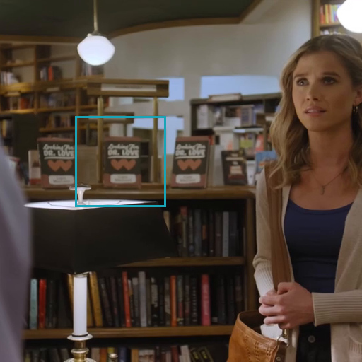
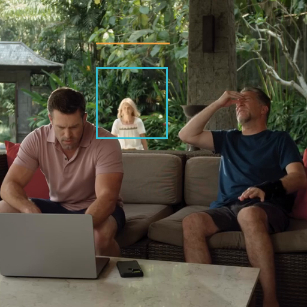
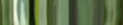
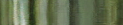
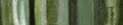
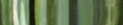
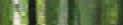
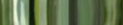
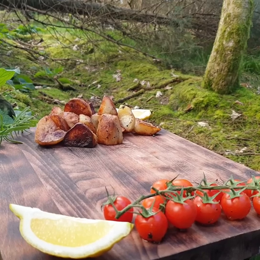

The comparison video could not be loaded.
RefocusCraft: Unified Video Refocusing
via CoC-Guided State Transitions
1Harbin Institute of Technology
2Ocean University of China
3Singapore Management University
CVPR 2027 Submission
Abstract
Post-capture video refocusing enables flexible control over focus and depth of field. However, image-based methods struggle to maintain temporal consistency when applied frame by frame, while two-stage video pipelines can introduce redundant restoration and propagate errors through an all-in-focus intermediate. We propose RefocusCraft, a unified one-step framework for efficient and temporally coherent video refocusing. Our key idea is to model refocusing as local transitions between source and target defocus states, jointly supporting detail recovery, blur synthesis, and appearance preservation within the same video. Guided by signed source and target circle-of-confusion (CoC) maps, our framework adapts a pretrained video diffusion model to directly generate the refocused video without explicit all-in-focus reconstruction. To align feature interactions with these transitions, we introduce two complementary attention mechanisms. Transition-compatible self-attention aggregates generation features with similar source and target defocus states, while defocus-compatible cross-attention selectively reuses source features to support the desired defocus transitions. Source-conditioned decoding further incorporates fine-grained input features to preserve textures and object boundaries. Experiments on our synthetic and real-world datasets demonstrate strong visual fidelity and temporal coherence across bokeh rendering, defocus deblurring, and refocusing.
Method
Real-world Video Refocusing
Yellow crosses mark target focus points. Videos in each row play in sync. Click any video to enlarge.
The comparison video could not be loaded.
The comparison video could not be loaded.
The comparison video could not be loaded.
The comparison video could not be loaded.
The comparison video could not be loaded.
Fine Details and Content Preservation
Compare lettering and fine patterns in matched, synchronized close-ups.

Source reference frame. The outlined region is enlarged on the right.
Book-cover lettering
Slow · 5 fps
Matched close-up of the printed lettering on the middle book cover. Click a crop to enlarge.
The comparison video could not be loaded.
Temporal Consistency
Inspect facial appearance and background changes over the same 25-frame clip.

Source reference frame. Cyan box: face crop. Orange line: background scanline.
Facial appearance over time
Slow · 5 fps
Background temporal slicesTime: top to bottom






The same fixed facial region across all 25 frames. Click a crop to enlarge.
The comparison video could not be loaded.
Focus and Blur Strength Control
Change the focus plane and blur strength independently on the same video.
Focus plane

Yellow boxes mark the selected focus point. Slow playback.
Focus Transitions
Yellow boxes mark the current target focus. Generated videos are shown in slow motion.
Inference Efficiency
NVIDIA A800 · 25 frames · 512 × 512 · Precomputed conditions
RefocusCraft2.36 sper 25-frame clip
RefocusCraft2.36 s
RAV81.98 s
AnyBokeh238.90 s
DiffCamera364.78 s
GenFocus597.65 s